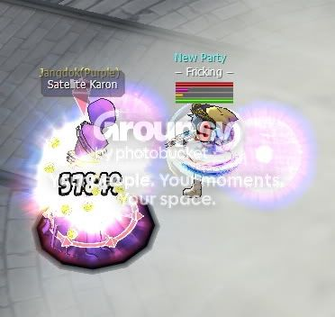
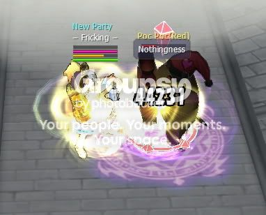
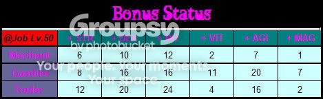
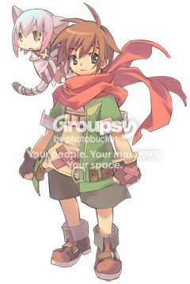
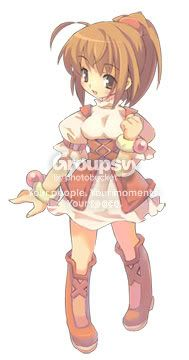
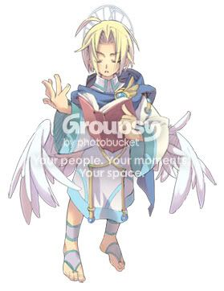
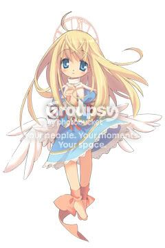
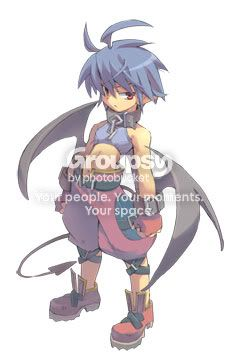
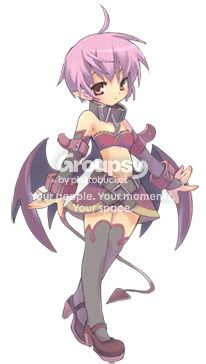

ประก๊าด ประกาศ เขียน:• ไกด์เก่ารูปมันหาย เจ้าของไกด์ แพรจังไม่อยู่ หนูเลยรับอาสาจัดทำไกด์ขึ้นมาใหม่ พร้อมอัพเดทข้อมูลให้แน่นกว่าเดิมจ้า
• ตอนนี้จะยังไม่ค่อยสมบูรณ์ ไงๆ ก็จะทยอยอัพเดทข้อมูลเรื่อยๆ เน้อ
Credit เขียน:ขอบคุณทุกคน ณ ที่นี้ที่เข้ามาขุด เอ้ย เข้ามาพูดคุยในกระทู้นี้จ้า
- Prof.Peary
- Donlanai
- hamtaro
- (ps)smart
- RockZ
- Descent
ชื่อใครตกไปท้วงติงได้น่อ
-:-:-:- Introduction -:-:-:-
Merchant จัดอยู่ในสายอาชีพ Backpacker มีทักษะส่วนใหญ่จะเน้นพวกการค้าขาย การลงทุน แสวงหากำไร การเดินทาง
รวมๆ ก็คือการหาตังเสียมากกว่าเกิดมาเพื่อต่อสู้ =w=
จุดเด่นของสายอาชีพ
• สามารถตั้งร้านขายของเองได้ โดยไม่ต้องพึ่ง มาริโอเน็ต โกเล็ม
• สามารถซื้อของจาก Merchant Guild ได้ในราคาถูกลง ด้วยสกิล Discount
• สามารถขายของแก่ Merchant Guild ได้ในราคาที่แพงขึ้น ด้วยสกิล Overcharge
• สามารถบรรทุกสินค้า ได้มากกว่าอาชีพอื่น ๆ ด้วยสกิล Packing และ Increase Weight
• รูปตัวอย่างสกิลเล็กน้อย ก่อนตัดสินใจเล่น =w=bRockZ เขียน:นี่คือ Full Buff ของ Coin Shoot / Dmg สูงสุดของ เวล 87 ที่ทำได้

เเระนี่คือ One or Eight / Full Buff / Dmg สูงสุดของ เวล 87 เหมือนเดิม
ที่เห็นปาเงินเเรงขนาดนั้น กับ 1/8 เเรงขนาดนั้น
เป็นส่วนนึงของค้อนทอร์จ้า
+ ยัดโล่ไฟใส่มอน เเล้วเฟลมฮาร์ท เเอสซิส
เเล้วตามด้วยออริจิ้น
-:-:-:- Beginning Guide -:-:-:-
1. เผ่าพันธุ์ที่เหมาะสมกับสายอาชีพ
บอกไว้ก่อนเลยว่า ไม่ว่าจะเลือกเล่นเผ่าไหน แต่เมื่อเลเวลสูงขึ้น ความเก่งของตัวละครมันก็ไม่ค่อยแตกต่างกันมากนัก
ดังนั้นไม่ต้องกังวลสำหรับเรื่องนี้ เอาเผ่าที่ตัวเองชอบ หรือมีปาป้าไว้ในครอบครองดีกว่า เพื่อความสบายใจนะจ้ะ =w=

Emil
เป็นเผ่าพันธุ์ที่เหมาะสมที่สุดแล้วล่ะ เนื่องจากใส่กระเป๋าหลัง 20 ของสาย BP ได้ ทำให้สามารถแบกของขึ้นมาได้เยอะเลยล่ะ
แต่ถึงกระนั้นพอเลเวล 75 พวกเผ่าอื่นๆ ก็สามารถใส่กระเป๋าหลัง 75 ทดแทนได้อยู่ดี

Titania
อาจเป็นอีกตัวเลือกนึง สำหรับคนที่อยากเล่นสาย Mag เพราะว่าเริ่มต้นด้วยค่า Mag สูง แต่ถึงกระนั้น คลาสแรกก็ยังไม่มีสกิลอะไรที่ต้องใช้ค่า Mag อยู่ดี

Dominion
เท่ดี =w=b
3.สายต่างๆ ของอาชีพแม่ค้า
แนวทางการอัพสกิล สเตตัส แม่ค้า แต่ละสาย
1.สายกระเป๋า กระบอง
สไตล์การอัพจะไม่ต่างจาก เบลด หรือ ไนท์
การอัพ จะอัพ STR เป็นหลัก และอัพ DEX ให้พอตีโดน
และก็เลือกอัพ AGI เพื่อความพริ้ว อัตราการหลบหลีก และช่วยให้ร่ายสกิลได้ไว
แถม ถ้ามีดาบปลอม หอกปลอม สามารถหาสาย FT มาสิงกด ดีเลย์แคนเซิ่ลให้ได้อีก
หรือเลือกอัพ VIT เพื่อความถึก บึกบึน กดสกิลแลกชีวิต ความปลอดภัยจะค่อนข้างสูง
เพราะถึงเราจะไม่มี AGI แต่เราก็มีหลบทั้งเวท ทั้งกายภาพอยู่แล้วจากสกิล Lucky กับ Bad Lucky
หรือจะอัพทั้ง VIT ทั้ง AGI เลยก็ได้ แต่ไม่ค่อยแนะนำจ้ะ เพราะมันจะทั้งไม่อึด ทั้งร่ายสกิลไม่เร็ว ฮา~
สกิลโจมตีหลักๆ
Bag Smash - กระเป๋าฟาด 250% จำนวน 2 ~ 3 ครั้ง
One Or Eight - แรง 777% มีความเสี่ยงม่องหน่อย แต่ความแรงน่าใช้งาน
Flower Card - เอากระบองทุบ 350% จำนวน 3 ที ร่ายอืดมาก แถมทุบช้า เหมาะกับสาย AGI เท่านั้นงิ
Coin Shoot - ปาตัง เสียทีละ 1500G กด เบิ้ลแรง 900% น่าจะแรงสุดละมั้งในสกิลทั้งหมดของแกมเบล้อ แถมต่อให้ถืออาวุธประชิด ก็ปาระยะไกล 5 ช่องได้ด้วย
2.สายปาไพ่
สายนี้ความปลอดภัยจะสูงกว่า สายกระเป๋า กระบองหน่อยนึง เพราะระยะโจมตีที่ไกลกว่า
การอัพก็ไม่ต่างจากสายบนมาก แต่ว่าจะเล่นได้แค่ Gambler เท่านั้น เพราะ Trader ถือไพ่ไม่ได้จ้ะ
อีกอย่าง ไพ่ ไม่สามารถตีบวกได้ และ โซลสิงไพ่ไม่ได้นะจ้ะ
ด้านสเตตัสเน้น STR อัพ INT พอประมาณ แล้วเลือกว่าจะลง AGI หรือ VIT จ้ะ
สไตล์การต่อสู้ที่แนะนำคือ เสก Arcana Card ออกมารัวๆ แล้วหาคนที่ใกล้ม่อง กดเบิ้ล ปา Continue Throw ยัดจ้ะ
สกิลโจมตีหลักๆ
Continue Throw - แรง 120% จำนวน 6 ดอก ถ้ากดดับเบิ้ล จะแรงเป็น 2 เท่า รวมๆ แล้วทำ DMG ได้สูงสุด 1440% เลยเชียวนะเอ้อ
One Or Eight - แรง 777% ถึงเราจะถือไพ่ แต่ก็ซัดระยะใกล้เน่อ เหมาะสำหรับคนที่งกไพ่ ไม่อยากปาไพ่เก็บเลเวล ฮา~
3.สายฮีล
สายนี้ จะไม่เน้นการโจมตี การทำดาเมจ แต่จะทำหน้าที่คล้ายๆพระ ซึ่งส่วนใหญ่จะปั้นเอาไว้สิงเป็นถัง E เก็บเลเวล ฮา
เพราะว่าไม่ได้อัพสกิลเกี่ยวกับการโจมตีเลย พ้อยก็เลยอัพสกิลดีบัฟ สกิลสุ่มได้เยอะกว่าชาวบ้านเค้า ฮา~
การอัพ ควรอัพ MAG ข้างหน้าต่ำๆ 80 เลย เพราะว่า อาชีพแม่ค้า มี MAG โบนัสค่อนข้างน้อย
แถม สกิล Random Heal ความแรง มันแค่ประมาณ ฮีลเลเวล 2~3 เอง
แล้วก็อัพ VIT ยาวจ้ะ การอัพ AGI อาจทำให้ร่าย Arcana Card ไวขึ้นกระตี๊ดดดนึง ถ้าคิดว่าคุ้มก็ลองดูนะจ้ะ
( แต่ไงๆ จขกท. ก็ว่า VIT ดีกว่า )
ด้วยความที่สายนี้ มี MAG แนะนำให้อัพ ATK Assist ไว้ด้วย ไว้กดให้เวลาสิงพวก เอเล ซอ จะช่วยได้เยอะเลยล่ะ
Sage สาย VIT - INT - DEX มีแค่ ATK Assist ของแม่ค้าสายฮีลก็ฆ่าพวกตัวบางๆ ได้นา อย่าดูถูก =w=
ส่วน Roulette Healing ไม่แนะนำให้อัพ แม้จะเป็นสายฮีลก็เหอะ
ถึงมันจะฮีลแรงกว่า Random Heal 2 เท่า แต่ฮีลว่าว บ่อยมาก -*- แนะนำให้กด Double Up แล้วใช้แรนด้อมฮีลเอา เวิร์คกว่า
4.สายผสม
อัพมันทุกอย่าง
STR - ตีแรง
AGI - ร่ายไว
VIT - ถึก
DEX - ใช้กระเป๋าฟาดก็ได้
INT - ปาไพ่ก็ดี
MAG - ตูฮีลได้อีก
แหล่มมั้ยล่ะ..... กรั่กๆๆๆ สายนี้ คำนวณสกิล + สเตตัสให้ดีๆ เน้อ ไม่งั้นจะ กากบรรลัยเลย ฮา
5.สายลูกพี่ลูกน้อง ไนท์ ตรูยืนเสกไพ่ของตูอย่างเดียว
สเตตัส
VIT - เต็มที่ เท่าไหร่เท่ากัน
AGI - เอาให้ได้ 108
INT - ขี้เกียจอัพ --- ก็ปั้น เซจ มาโอนอิ้น 100 ยัดใส่ให้ ,, แต่อัพก็ดี เผื่อเวลาโดนลบบัฟ
MAG - เอาไว้เติม MP
ยืนกด ออโต้ เสก Arcana Card อย่างเดียว เมพ
เหมาะกับคนที่ขี้เกียจลงมือฆ่าคนด้วยตัวเอง แต่กดปุ่มเดียวก็ทำให้คนตายได้
แถมมีความถึก อึด ทรหด ไม่กลัวต่อเวท ปืน ดาบ หอก ด้วย ( แต่กลัว Eva ของ เนโคร ฮา~ )
6.สายไรออท
สายนี้ เคยบูมมากๆ สมัยก่อนที่ซาก้า 8 จะเข้า
สเตตัสที่เล่น ส่วนใหญ่ก็จะเป็น Vit - Agi ไม่ก็ Vit - Agi - Mag
แต่ปัจจุบันสกิล Riot Hammer ตอนนี้ ความแม่นยำ ขึ้นอยู่กับดวง
โอกาสสำเร็จประมาณ 10% - 20% ได้มั้ง -*-
ดังนั้น หันไปเล่นสายอื่นเหอะ
4.สถานที่เก็บเลเว่ล
เว้นไว้ก่อน =w=a
* ป.ล. สาย Mag สายสิง ก็ดูดยัน 99 ละกัน ฮา
-:-:-:- Link ต่างๆ ที่สำคัญ -:-:-:-


 สามารถซื้อได้จาก Gambler Guild โดยการกด Gambler Queen ไปซื้อ
สามารถซื้อได้จาก Gambler Guild โดยการกด Gambler Queen ไปซื้อ


 Stamina Potion จำนวน 5 ชิ้น ( Dominion )
Stamina Potion จำนวน 5 ชิ้น ( Dominion )
 Resurrection Potion จำนวน 2 ชิ้น
Resurrection Potion จำนวน 2 ชิ้น
 Muti-condition จำนวน 1 ชิ้น
Muti-condition จำนวน 1 ชิ้น
 Mold จำนวน 2 ชิ้น
Mold จำนวน 2 ชิ้น
 Cheese Curry จำนวน 2 ชิ้น
Cheese Curry จำนวน 2 ชิ้น
 Glass Materials จำนวน 20 ชิ้น
Glass Materials จำนวน 20 ชิ้น
 Heavy Seriko จำนวน 1 ชิ้น
Heavy Seriko จำนวน 1 ชิ้น